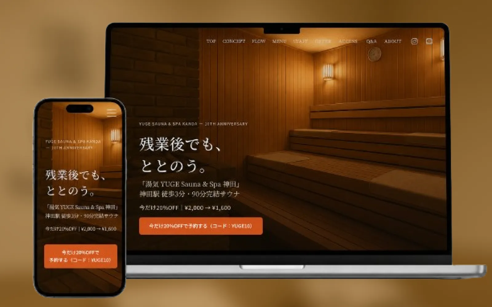
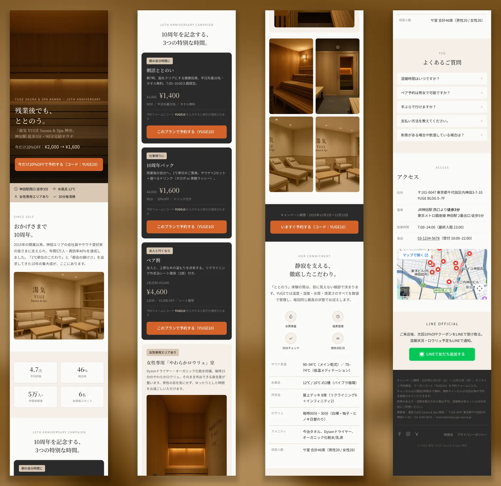

PROJECT / CASE STUDY
YUGE
Landing Page

01
OVERVIEW
概要
神田のサウナ施設「湯気 YUGE Sauna & Spa 神田」の10周年キャンペーンLP。サウナの静けさを伝えながら、予約とLINE登録へつなげることを目指しました。
02
TARGET
ターゲット
神田・大手町・秋葉原で働く25〜44歳の会社員。残業が多く、仕事帰りの短い時間で“ととのいたい”人を中心に想定しました。週末にペアでサウナを巡る、サウナ好きの男女にも届く内容にしています。
03
DESIGN POINT
工夫したポイント
- 静けさと没入感サウナ施設らしい空気感を出すため、余白と写真の見せ方にこだわりました。
- 行動を促すタイミングキャンペーン内容を整理し、予約したくなるタイミングでポップアップフォームが開くようにしました。
- 迷わない導線予約とLINE登録の導線をはっきり分け、どちらに進めばよいか迷わない構成にしました。
04
SCREENS
画面イメージ

Visit Website ↗（外部サイトへ移動します）
NEXT PROJECTLa vie belle.mf
制作について相談する →
※クラウドソーシング経由の方は、応募元のメッセージからご連絡ください。